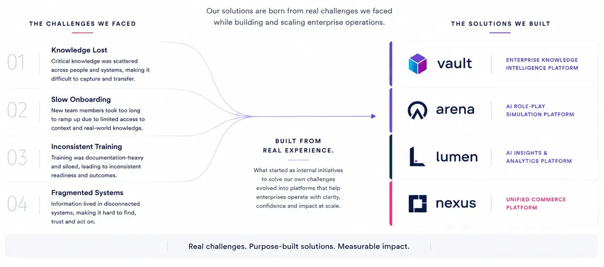
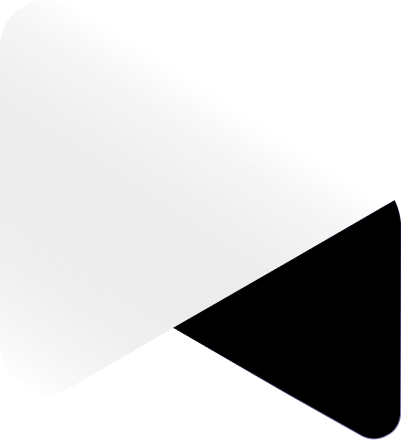
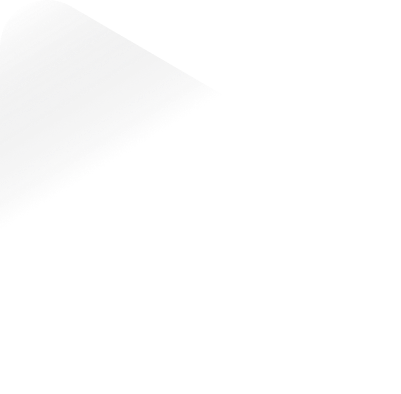

Vault is the foundation of our platform direction. It captures employee experience and connects it with information from across the business, helping teams retain knowledge and put earlier learning to use.
Our applications bring that ambition into specific work. Arena supports employee practice, Agentic QMS is developing toward knowledge-informed quality workflows, and Nexus combines unified commerce with a path toward greater operational autonomy.
Capture what people learn and put it to work, so teams make better decisions and keep improving.

Speak with our team about your organization’s needs, a product demonstration, or a potential partnership.
Contact Artisans Cloud
